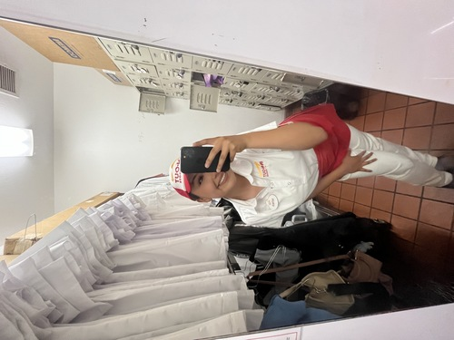
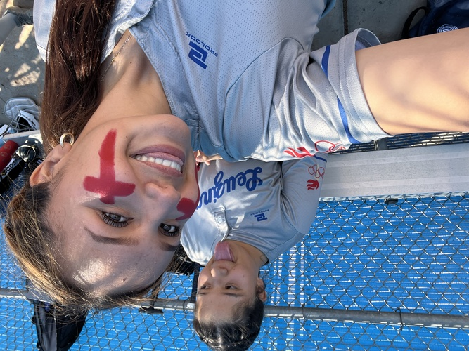
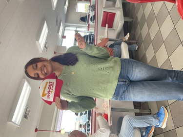
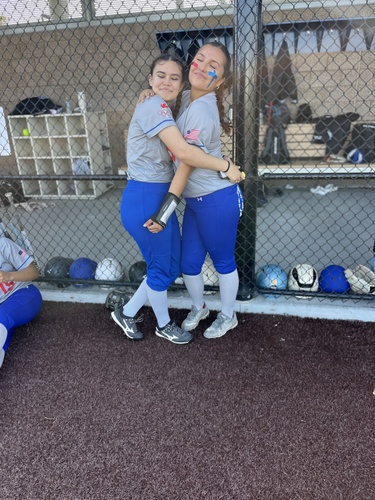

My name is Natalia, and I am a second year student at the University of California, Riverside (UCR). I am majoring in Business Administration, and I am interested in focusing on Finance. I decided to study business because I want to learn more about how companies work, how money is managed, and how businesses make important decisions. My goal is to build a successful future for myself and find a career that I enjoy. One of my biggest goals is to work in the finance industry. I am especially interested in the possibility of working for Toyota as a financial analyst. I would like to learn how companies manage their money, plan their budgets, and make financial decisions. I know that reaching my goals will take time, hard work, and dedication, but I am willing to keep learning and improving myself. My family is an important part of my life. They have helped shape the person I am today and taught me the importance of responsibility, hard work, and education. I want to make my family proud and create a future where I can be successful and help the people I care about. Their support motivates me to keep going, especially when school becomes difficult. I would describe myself as a hardworking and creative person. I like learning new things and finding ways to improve my skills. I also believe that I can learn from my mistakes because they help me understand what I need to work on. Even when something is challenging, I try to stay focused and do my best. I know that I still have a lot to learn, but I see college as an opportunity to grow and discover more about myself. As a college student, I want to gain more experience and become more independent. I know that college is different from high school because I have more responsibilities and need to manage my time carefully. I want to improve my communication, problem-solving, and teamwork skills because they will help me in school and in my future career. Outside of school, I enjoy being creative and spending time with the people who matter most to me. I also enjoy being involved in activities that allow me to express myself and learn new skills. I believe it is important to make time for the things I enjoy while also staying focused on my responsibilities. Overall, I am excited about what the future holds for me. I know that I will face challenges along the way, but I want to use those experiences to become a stronger and more confident person. My main goal is to finish college, build a career in finance, and make my family proud. I want to continue growing, learning, and working toward the future I imagine for myself.
• Responsible for making sure the customer left home with a smile
• Made sure the dinning hall was clean and stocked
• Ran sessions to help students learn hit a ball
• Went through foot work
• Went over how softball works



